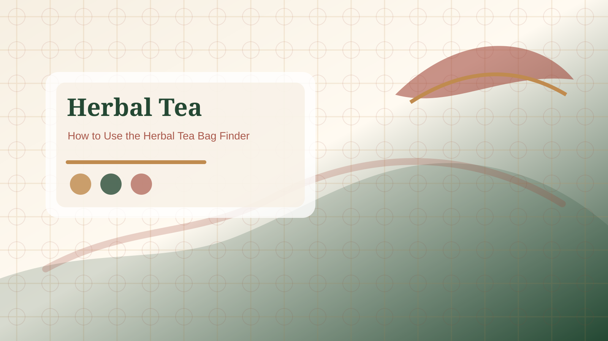

Light floral cup
Choose rose, chamomile-style, lavender-style, or chrysanthemum notes when you want a softer aroma.

Build a simple evening tea routine around flavor, caffeine awareness, storage, and preparation rather than wellness promises.
Quick Answer: For an evening routine, choose herbal tea bags with clear caffeine wording, a flavor you actually enjoy at night, simple preparation, and packaging that is easy to store. Do not choose a product because it promises sleep or medical results; choose it because the label, flavor, and routine fit your evening.

Start with the label. If you want an evening tea, the caffeine note matters more than the color of the box. Many herbal infusions are naturally caffeine free, but blends can include green tea, black tea, yerba mate, or other caffeinated ingredients. After caffeine, compare flavor intensity. Mint can feel clean, floral blends can feel lighter, ginger can feel warmer, and citrus peel can feel brighter. The best choice is the one that matches the actual time and setting.
A good evening tea bag should be easy to brew without measuring, straining, or cleaning several tools. Individually wrapped bags may work better on a bedside table or shared kitchen. Loose sachets may work well if the box seals tightly. Consider water temperature, steeping time, cup size, and whether the smell is pleasant late in the day. These practical details make the routine last longer than a dramatic product claim.
Evening tea can support a quiet habit, but it should not be framed as a treatment. If sleep, anxiety, medication, pregnancy, allergies, or chronic symptoms are part of the question, use professional advice. This page is about product comparison and routine fit, not medical guidance.
Keep the evening choice narrow. Pick one caffeine-free or clearly labeled low-caffeine option, one flavor family, and one storage format. If you keep three very different boxes open, the routine becomes a shopping problem again. A good evening shelf might include a floral blend for lighter nights, a mint blend for a cleaner finish, and a warmer ginger-style blend for colder weather. Check each label separately because similar boxes can use different caffeine sources, sweeteners, or flavoring language.
Reference: NCCIH herbs and supplement safety overview.
Choose rose, chamomile-style, lavender-style, or chrysanthemum notes when you want a softer aroma.
Choose mint or citrus peel when you want a cleaner finish that does not feel heavy.
Choose ginger or cinnamon-style notes when the evening setting calls for a warmer flavor.
No. Many are caffeine free, but some blends include caffeinated tea or mate. Read the caffeine statement and ingredients.
Light floral, mint, mild citrus, and gentle spice are common evening choices, but the best flavor is the one you enjoy without feeling too strong.
No. This site does not make sleep or health promises. Use evening tea as a calming routine only.
They can help with storage and freshness if the box sits near a desk, kitchen, or bedside area. A sealed pouch can also work.